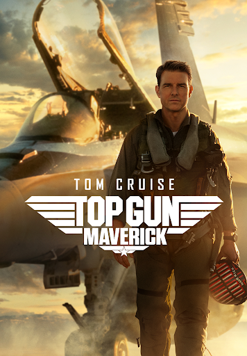

[FILME]
Top Gun: Maverick
2022 • 2h 11min • Ação/Drama
8.3
/ 10
Pete Maverick Mitchell retorna para treinar uma nova geração de pilotos de elite enquanto enfrenta desafios de seu passado.
Direção: Joseph Kosinski
Elenco: Tom Cruise, Miles Teller, Jennifer Connelly e Glen Powell
Nossa crítica
///INSIRA critica///
Veredito
///INSIRA PEQUENA CONCLUSAO///
8.3
de 10